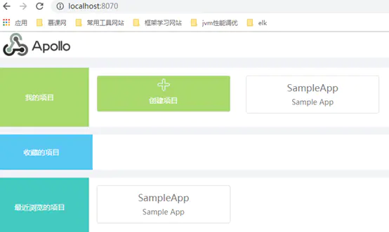

apollo概述
用过spring项目开发的人都知道，spring的配置信息，都需要用配置文件(例如:application.properties)以key-value的方式进行记录，然后代码中使用@Value注解引入这些变量。虽然将配置信息与代码抽离，但是也存在问题：将配置信息文件放入项目，打包部署，也就意味着，后续需要修改配置相关信息，则需要重新打包部署项目。并且，项目如果接入微服务架构，那些这种操作也就显得更加不方便。
于是，配置中心Apollo应运而生。所谓配置中心，就是将项目需要引入的配置信息，统一存放在Apollo上，统一管理修改，并且支持热发布(在Apollo上修改对应配置信息，界面操作发布，指向的应用程序会及时自动重新加载量信息)。此外，对于集群部署的应用，Apollo同样支持配置，在配置中心可以对不同集群进行不同的配置，做到同样的项目代码，可以读取不同的配置信息。
配置中心主界面大致如下：

对于微服务的配置中心，将每个服务作为一个独立项目配置于Apollo即可。
具体配置参数界面如下：
可见，各个参数也是以key-value形式设置。
apollo好处
统一管理不同环境、不同集群的配置
- Apollo提供了一个统一界面集中式管理不同环境（environment）、不同集群（cluster）、不同命名空间（namespace）的配置
- 同一份代码部署在不同的集群，可以有不同的配置
- 通过命名空间（namespace）可以支持多个不同应用共享同一份配置
配置修改实时生效（热发布）
- 在Apollo修改完配置并发布后，客户端能实时（1秒）接收到最新的配置，并通知到应用程序
apollo配置修改通知机制
由apollo监测到配置信息发生修改发布，并通知应用端。应用端从apollo出获取加载新的配置信息。